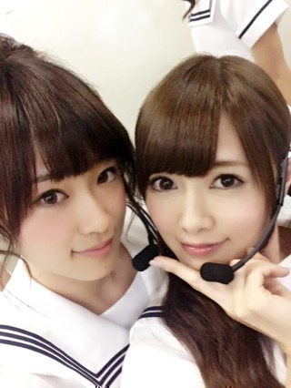
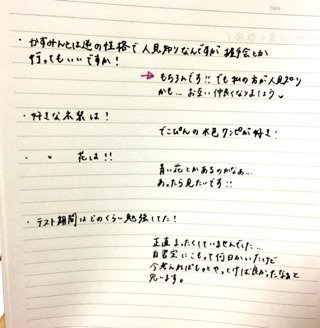
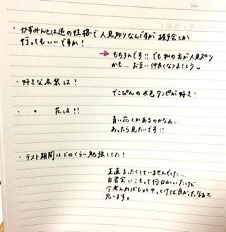
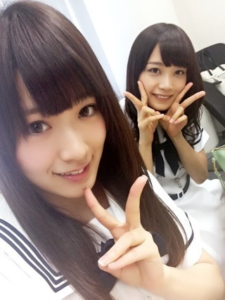
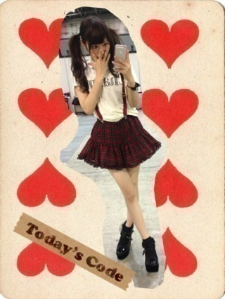
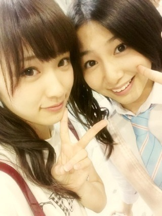
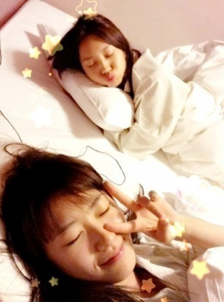
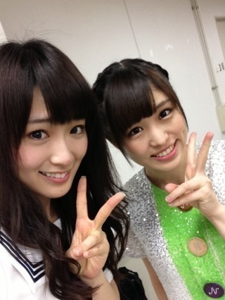

2013/0929Sun（´-`）.｡oO(か ずみん×224
バケラッタ(*´ω`*)ﾉ
いつも応援ありがとう！
今日は名古屋での個別握手会
でした〜ヽ(´>∀<`*)ﾉ
すっっっごく沢山の方が
来て下さいまして...
感動しました(T_T)(T_T)♡
みなさん、本当いい人♡
楽しかったです。
ありがとうございましたっ♪
時間がなさすきて
全身コーデ撮れんかった(T_T)
今日は帽子がポイントでしたσ('д'o)
じょーずの写メで許してちょ♪笑

てへ♪
この写真口似てない！？！？
2人ともキュッてしてる！
帰宅時にとまととろっちーと♪

--------------
昨日はガールズアワードに
出演させていただきました！
私はいつもよりちょっと濃いめの
メイクに久しぶりのお団子ヘア！！
まいやんと！
まいやんと写メ撮る時は
お団子ヘアの時が多い気がする♪笑
なぜだろ！？

私は初めてランウェイを
歩かせていただきました( ∩ˇωˇ∩
女の子の永遠の憧れである
ランウェイをお洋服に身を包まれて
一人で歩くというのは
すごく素敵な経験でした♭.°
想像以上に難しく、
緊張もしましたが、
もっと勉強して、
また機会があれば経験させて
もらいたいです(*^^*)
ありがとうございました！
----------
今日もみなさんからの
質問に答えます( ´ ▽ ` )ﾉ
★かずみんは剣道部に入って
自分自身変わった事ありますか？？
→物心着いた時から剣道を
始めてたので変化は"？"だけど
確実に言えるのは、剣道をもし
やっていなかったら弱い人間に
なっていたと思います。
武道はやはり日常の振る舞いから
上下関係まで厳しく指導される
ので、沢山学べました！
.
.
.
★自分は普段のかずみさんも好きですが
ステージ上でのかずみさんのアイドル
としてのダンス歌が大好きです！
かずみさんがアイドルとして
ステージ上でのかずみさんのアイドル
としてのダンス歌が大好きです！
かずみさんがアイドルとして
ステージ上とか普段とか大事に
していることはなんですか？
→ありがとう(T_T)
普段は本当に毎日楽しく
生きてます。笑
もちろん忙しい時もあるし
ルールとかはちゃんと
守らなきゃいけないけど
全然苦じゃないし^ ^
基本自由にメンバーや
友達と楽しく過ごしてるよ！
ステージの上ではTHE アイドルに
なるように日々研究しています！
.
.
.
★握手会で大好きなセーラームーン
のコスプレはしないの？
のコスプレはしないの？
→したいのは山々ですが
メンバーから笑われそうなので
する勇気はありません(￣▽￣)
.
.
.
★
かずみんは剣道の有段者だけど
時代劇のオファーが来たらやってみたいと思う？
または殺陣に興味ある？
→実は乃木坂に入る前、
時代劇に出たくて殺陣を本気で
習おうとしてました！
今は他にやるべきことが
沢山あるので、機会があれば
いつか...というカンジです！！
.
.
.
★
好きなセーラー戦士
トップ３を教えてください
→マーキュリー♡
セーラームーン♡
ビーナス♡
.
.
.
★
俺は飴と鞭コンビ大好きですが、
かずみんはレッスンの合間とかに
陽菜ちゃんと剣道ごっこを
したことありますか？
→私は剣道しか取り柄がないくらい
ずっと剣道中心の生活でしたが、
陽菜ちゃんは剣道をちょっとしか
やってなかったみたいで。笑
いくらずっと一緒にいる
陽菜ちゃんでも剣道の話は
あんまりしないですね´д`
.
.
.
★
一人でいるのが好きな人は
どう思いますか？!!
→好きです。いいと思います！
一人で図書室で本を読む時間が
私は好きでした(T_T)
高校時代が懐かしい。
.
.
.
★
今年高校受験なんですが、
かずみんは高校受験どうやって
乗り切りましたか？
→やっぱりわかりやすい先生の
個別塾に行ってましたね！
私は志望高には受かったけれど
受験に失敗してるので...
(点数が過去最低だった)
そんな私からの失敗しないための
アドバイスは、
過去問を解いて
安心しないことかな。
私みたいにならないようにね！
頑張って下さい！！
.
.
.
今日はこの辺で(*´ω`*)
一つ一つ真剣に答えました。
長くてゴメンね(´;ω;`)
それでは、
明日からも頑張ります！
おやすみなさい...☆
.
.
.
.
.
あ、アメブロの当番今日私だ！
そっちも今から書かなきゃ！！
2013/0927Fri（´-`）.｡oO(か ずみん×223
楽天イーグルス、
優勝おめでとうございます！
アメイジング＼(^o^)／
オメイジング＼(^o^)／
今日は大好きなインドカリーを
食べて気分は上々ヽ(´>∀<`*)ﾉ

ろっちー、じょーさん、
なぁちゃん、ひなちゃんと行った♡
ちーちゃんは学校お疲れさまね(´;ω;`)
めっちゃウマいるでした♪♪
昨日の夜はね、
まあやのお家に遊びに行ってね、
まあや初めて人狼ゲームやったの！
そしたらね、
まあや強いの！！！！！
まあやの人狼...見破れなかった´д` ;
愛されまあや、またやろうね♡
まあやがちょっと前に私のこと
沢山ブログに書いてくれて
じぃじ(私)は嬉しかったよ(T_T)
まあや最高愛してる！笑笑笑
いやぁ
愛してるってなんか恥ずかしいね。笑
...キャラじゃないから絶対
口では言えないけど...
らぶ！
みんなも大好きよ( ∩ˇωˇ∩)♡
---------------
さぁ！前回募集しました
質問タ〜イムヽ(´>∀<`*)ﾉ
私の想像以上の質問が届いて
びっくり嬉しかったです(⌒▽⌒)
では、いっきまーす♪
★北海道の食べ物で好きな物は？
→トウモロコシ、サーモン、蟹
あと札幌タイムズスクエア！！
.
.
.
★体重管理でしていることは？
★体重管理でしていることは？
→最近はしてなくて太りました...
反省してます(T_T)
私めっちゃ食べるんですよ！！
.
.
.
★ガッシュベルで、
いちばん感動したところは？
→ゼオンが魔界に帰る所(´;ω;`)
あとキッドが
ミコルオ・マ・ゼガルガ
を放ったとき(T_T)
一番好きなキャラはレイラです♡
.
.
.
★かずみんは肉食系ですか？
草食系ですか？


草食系ですか？
→肉食ではないです((((/*0*)/
魚が好きです！
.
.
.
★かずみんはなんの香水が好きですか？
→最近はディメーターの香水が
変わってて好き♡
ブラウニーとか本物みたいなんです！
.
今までずっと愛用してたのは
廃盤になってしまって...(T_T)
今探してるの(´;ω;`)
.
.
.
★ディズニーの中で一番
好きなキャラクターは？？
→ユニベアちゃん、
モンスターズインクのブー！
.
.
.
★かずみんて髪の毛染めた？
→実は自分で髪の色を抜きました(´`)
学生時代くらいにしようかなと
軽い気持ちでやったら思ったより
明るくなってしまって(´;ω;`)
ただ、意外とメンバーや
スタッフさんから好評で
気に入ってます。笑
.
.
.
★かずみんの応援と受験勉強
どちらに力をそそけばいいですか？
→ええっ>_<
応援してくれるのすごく嬉しいよ！
でも受験で人生が
大きく左右されるよね。
私は待っているので、
勉強頑張って下さい(´;ω;`)
遠くから応援してるよ！
受かったら教えて下さい( ∩ˇωˇ∩)
.
.
.
★かずみん推しは正式に
『ポジティ部員』と
名乗ってよいですか？
→はい！！もちろんっ♡
高山推しの方は
即入部となります( *´艸｀)
.
.
.
★最近Availには行かないんですか？
→けっこう行ってます。笑
前回の個別で着たスカートも
アベイルよ〜(￣▽￣)
.
.
.
★かずみんが最近始めたいことは？
→勉強かな！
久しぶりに陽菜ちゃんの
数学プリントを
やらせてもらったら
けっこう忘れてて
ショックだった(T_T)
脳の衰えは悲しいです...
国語と社会は元から苦手だから
いいんだけどねσ(ﾟ∀ﾟ*)
数学と英語やりたい！
.
.
.
.
.
ノートにも書いてみた！
私字が汚くてやだーと悲しんでたら
ちーちゃんが質問を書くのを
ちょっと手伝ってくれました(*´ｰ`*人)
どれかわかるかなぁ？？

↑これは私がちょっと太いペンで
書いた見にくい字です...
色々試行錯誤しました！笑
久しぶりなもんですみません(ﾉ;ω;)ﾉ
読めるかなぁ>_<？？
今日はここまで(*´ｰ`*人)
質問してくださったみなさん、
ありがとうございました！！
順にちょっとずつだけど
返して行きますね〜(っ*´x`)っ
不器用でごめんなさいね(T_T)
ではでは！！
今日もお疲れ様でした！
2013/0924Tue（´-`）.｡oO(か ずみん×222
バケラッタ(*´ω`*)ﾉ
いつも応援ありがとうございます！
ツインが意外と好評で嬉しかった(T_T)
今回が222回目の記事！！
ということで今回質問を募集
しまぁーす(σ´∀｀)σ
私に聞きたいことあるよーって方！
いましたらぜひ書いてくださいっ☆
ちなみに最新のプロフィール
血液型
→A型の家系に生まれたA型
丁寧じゃないけど神経質なA型！笑
趣味
→セーラームーンっぽい物を集める
あと香水集め☆
好きな番組
→バカソウル、クイズ番組
好きなマンガ、アニメ
→金色のガッシュは不動の一位！
ちはやふるも相変わらず
新が好きで読んでます(*´ｰ`*人)
好きな洋服
→Swankiss、最近好きになったの！
MILKやエミキュは特別な日用♡
あと最近は原宿系のもスキッ！
Katie、Candy Stripperは高いけど
たまーにご褒美に！
ハマってるもの
→チョーカー★
アクセサリー( ∩ˇωˇ∩)
セーラームーン♡♡
好きな食べ物
→やっぱり牡蠣や湯葉♪
そして最近ゴルゴンゾーラチーズの
パスタにハマってます(σ´∀｀)σ
こんなカンジかなぁ(^^)
今日はまいまいとお仕事＊
今から頑張ってきます！
質問は次のブログで返すね♪♪
それではっ( ´ ▽ ` )ﾉ

2013/0922Sun（´-`）.｡oO(か ずみん×221
今日は握手会でした(*´ω`*)
久々であっという間だった(*ﾟﾛﾟ)!!
来てくださったみなさん、
ありがとうございました！

今日の気分はツイン♡
セーラームーンみたいに
なりたい！！！笑

最近は可愛くてラインが綺麗に
出るのが好きですっ♪♪
もう20歳になるし...
大人っぽいのも試したいな！

今日も安定の市來先生と(*´ｰ`*人)

みなさん、握手会
また来てくださいね(*∩ω∩)
明日もお仕事 頑張りますっ！
みなさんは日曜日かぁ...
毎日楽しんでね( ∩ˇωˇ∩)
それでは。
2013/0919Thu（´-`）.｡oO(か ずみん×220
バケラッタ(*´ω`*)ﾉ
いつも応援ありがとうございます！
昨日仙台から帰って来たよ〜♡
まいやん、始球式緊張したね(´;ω;`)
かっこよかったよ！！
綺麗な真っ直ぐな球でした。
私だったらあんなには飛びません(T_T)
お疲れ様ねぇ>_<
来てくださったみなさん、
ありがとうございました！
東北楽天ゴールデンイーグルスの皆さん、
ありがとうございました！
牛タン美味しかった(*∩ω∩) ♡
やわらかかったよ〜！
食べすぎて次の日胃がもたれた...
お部屋はじょーさんと一緒♭

じょーさんキャラクターみたいで
なんかかわゆい( ´ ▽ ` )
ろっちーもお部屋に来てくれたけど
流石に3人じゃ人狼はできなかった！
でも楽しかったです♡
朝帰って来て、
(朝からずんだパフェ食べた)
ひなちゃんと
ミュージカル セーラームーン
ミュージカル セーラームーン
観てきました〜！！
今までDVDでしか
見たことなくて...
ずっと見たいなって
思ってました...(´;ω;`)♡
だから8年ぶりにやると知った時は
行きたくてしょうがない衝動に
駆られてしまって！！！
もう楽しかったですヽ(´>∀<`*)ﾉ
勉強にもなりました！
マーキュリーは私の
永遠のアイドル...( ∩ˇωˇ∩)♡♡
青って色好きだし性格も好きっ！
本当素敵でしたっ♪
ありがとうございましたっ！！
人を魅了する見せ方をちょっと
学んだ気がするので、
これから生かしていきたいです！！
最後にずっと載せてなかった
かりんちゃんとの写真♪

いつ載せよういつ載せようって
考えてたらなかなかタイミングが
合わなくて>_<
自分のファンだった子が
アイドルになってくれた。
実は夢だったんです。
私も山口百恵さん見て、
アイドルになりたいって思ったから...
私もそんな、女の子に
私もそんな、女の子に
夢を与えられる存在に
なりたいって思ってました。
まさかこんなに早く叶うなんて
うれしいっす。涙
かりんちゃんが私の夢を
1つ叶えてくれました(*´ｰ`*人)
ありがとう。
しっかり者のかりんちゃん、
一緒に頑張ろうね！！
ではではヽ(´>∀<`*)ﾉ